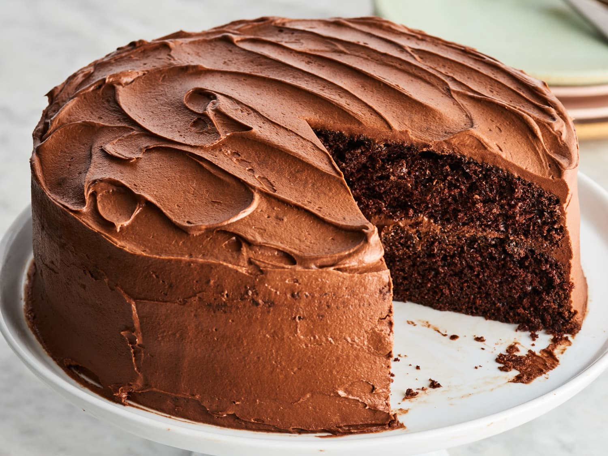
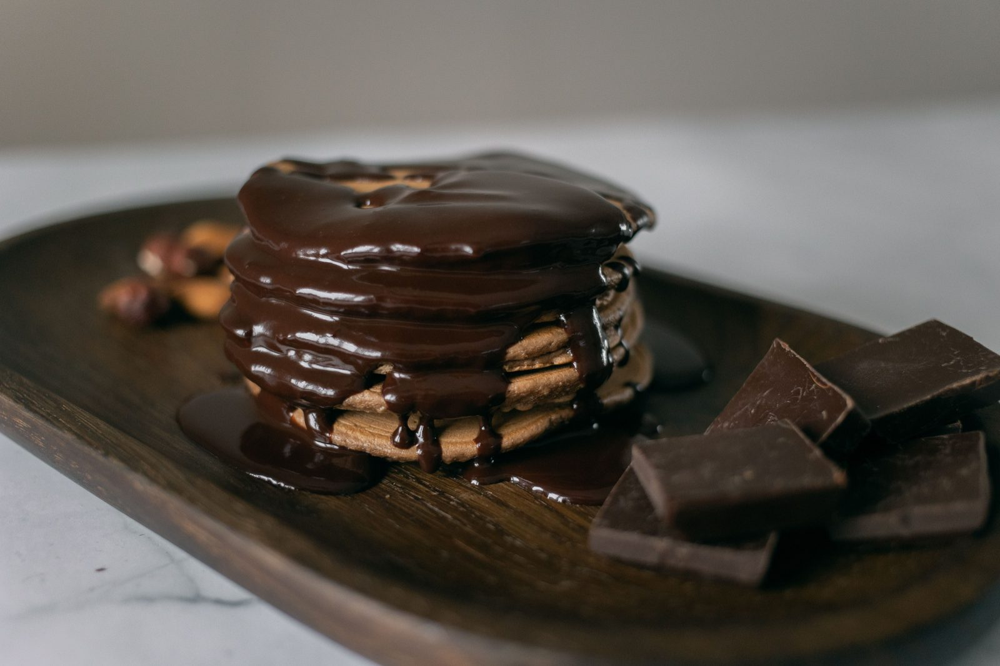
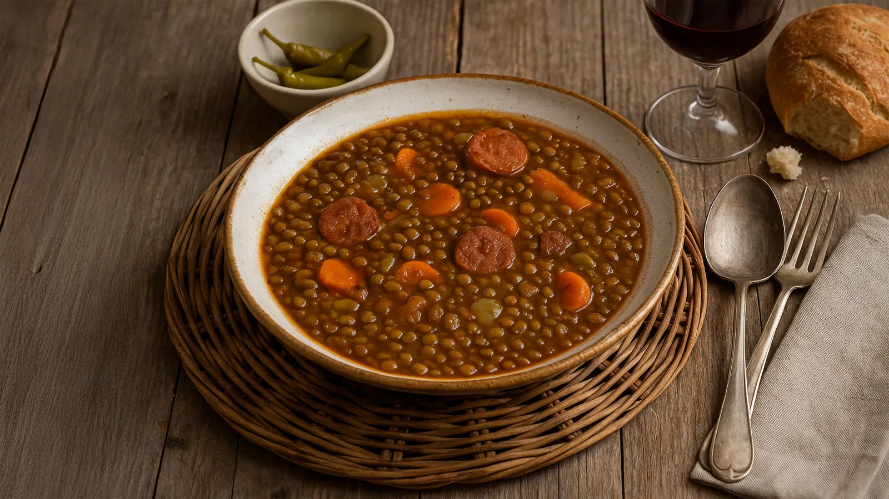
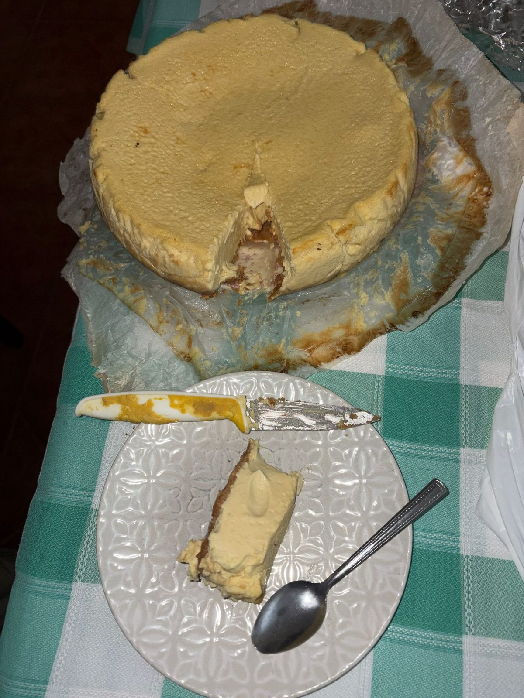
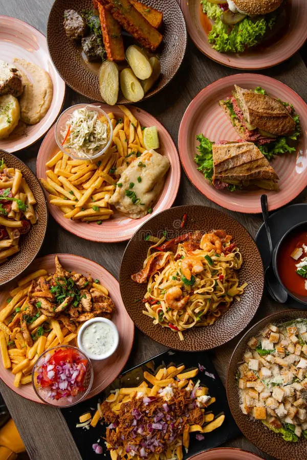
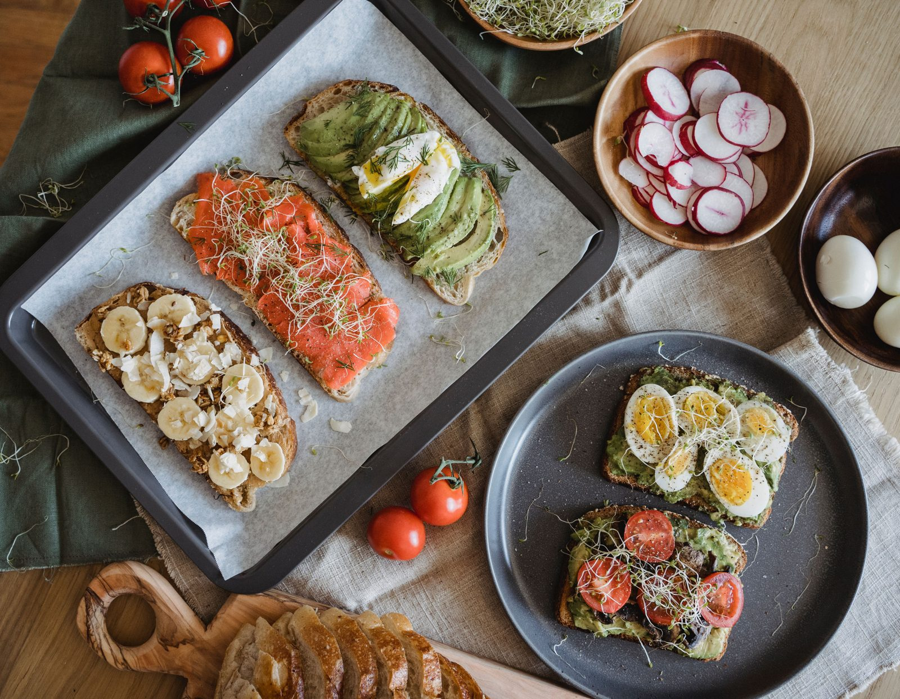
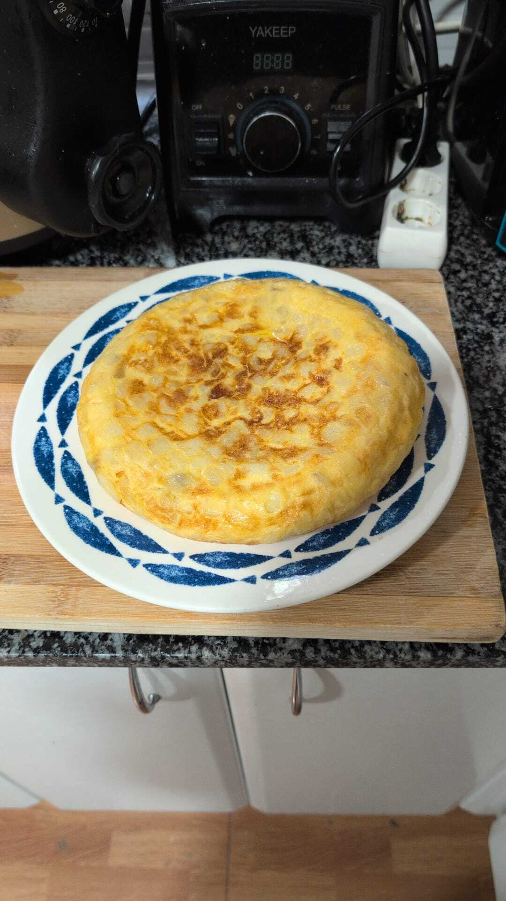
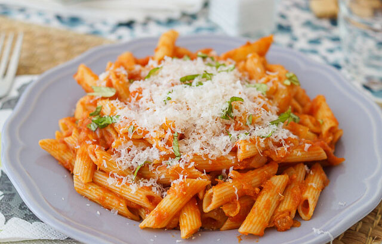
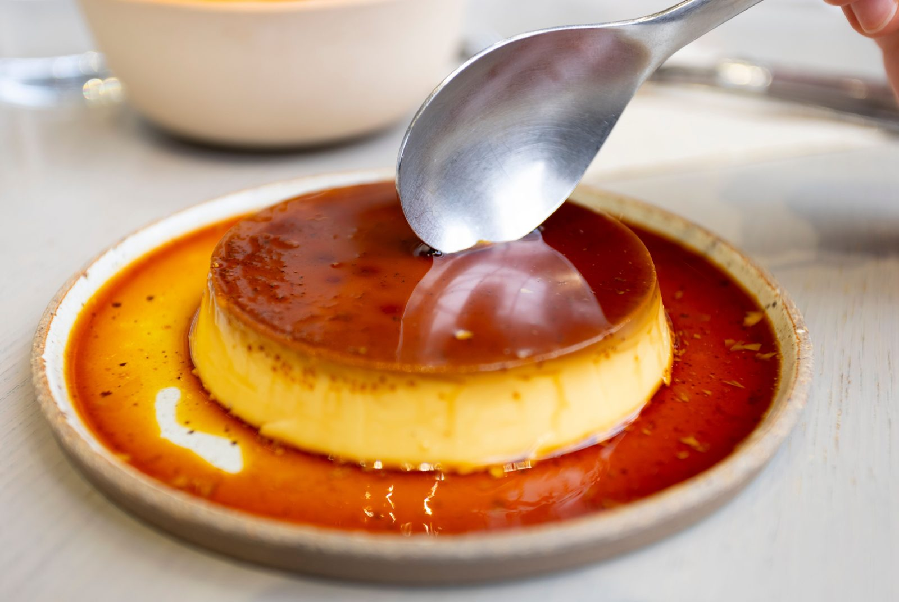

Recetas caseras compartidas por gente como tú, listas para hacer hoy mismo

RecetApp reúne 7 recetas subidas por 3 cocineros, desde platos de toda la vida hasta postres para darse un capricho. Cada usuario puede añadir las suyas y todos pueden probarlas en su cocina.
¿Te apetece algo diferente? En Cocina del mundo tienes platos típicos de otros países para salir de la rutina sin complicarte.
RECETAS SENCILLAS PARA EL día a día

DESAYUNOS
PLATOS PRINCIPALES
POSTRES
COCINA DEL MUNDO
RÁPIDAS
CON HUEVO
CON CHORIZO DE CUCHARA DULCES CON QUESO
CON LECHE DEL MUNDOLO ÚLTIMO
La de toda la vida, jugosa por dentro y con su cebolla.
VER RECETA →